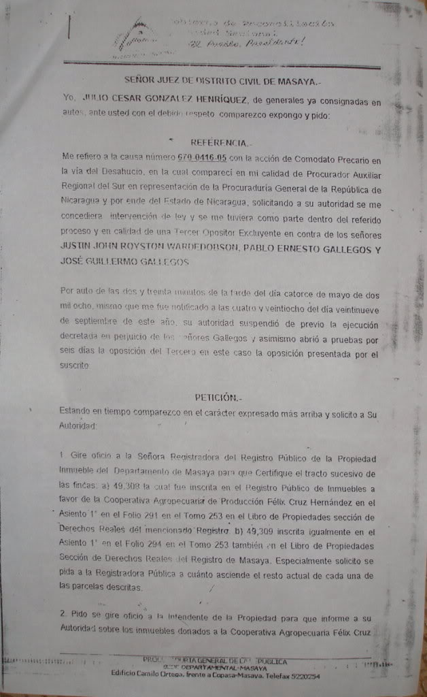
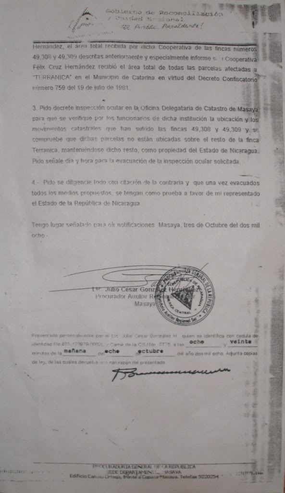
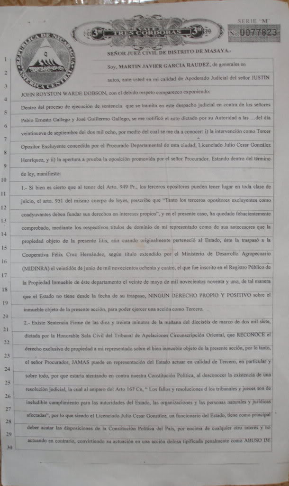
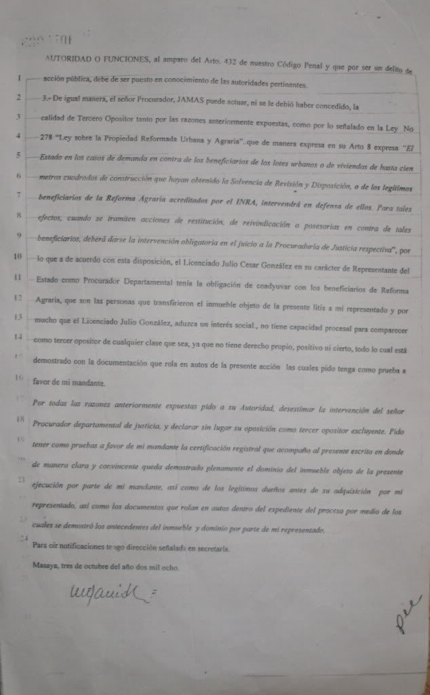

Government Intervenes, Blocks Eviction
Breaking News
Monday Sep 30, 2008, after more than Five (5) Months, the District Judge of Masaya officially acknowledged the request for third-party Intervention presented by the Masaya Delegate of the Procuraduria General of Nicaragua (The Government).In his "Auto", the Judge acknowledges the Motion and opened a period of eight days in which to hear arguments on "right of intervention". Jump below...
The arguments made in the PGR Delegate's filing are remarkably similar to the arguments of the Alcaldia and give rise to the suspicion that he is acting at the behest of, or in collusion with the Alcaldia of Catarina. The essence of the claim of "right" to Intervene is that the Government had issued the Original Agrarian Reform Title, the basis of the whole issue, and that therefore the Government has a "Continuing Interest".
However:
- The Government of Nicaragua, in granting Agrarian Reform Title to the Cooperativa in 1983, Ceded its rights to this property forever.
Indeed this very Title was Ratified in 2007, under the present Government. The PGR's motion is pure hypocrisy. Since it Ceded its rights, the Government cannot possibly show a "Continuing Interest" and, therefore, it has No Right to Intervene.
- The Government failed to file its motion to Intervene in a timely manner.
The PGR at the National Level has been informed, in writing, a number of times about the ongoing dispute and of this case in particular. The topic has been the subject of numerous articles in National newspapers as well as the subject of a 15 minute Documentary aired on national TV. The Government has shown no interest in the matter at all.
Moreover, the Trial is already over, the sentence was handed down, the appeal failed, and the Order for Execution of the Sentence was issued. It only remains that the Judge follow through on the Execution of Sentence.
Anywhere in the world, including Nicaragua, such a request for "Intervention" by a third party cannot be accepted at such a point in a civil trial.
This is Rhetorical in that it is clear that, in this case, there is no more "argument". The Sentence is final, The Appeals are done. The Trial is over. The Order for Execution of Sentence has been issued.
There is no more "trial" for the PGR to participate in. It is Glaringly Obvious that the action of the PGR, in collusion with the Alcaldia of Catarina, is merely to Delay the execution of the sentence of Eviction
A Telephone call to the Chief of the Department of "National Property" of the PGR (National Level) received the response that the PGR had no knowledge or any "interest" in any dispute in Catarina.
Meanwhile, the PGR's filing has sat with the Judge since April 18th, 2008. He has not issued any ruling on its admissibility nor any official notification regarding the outstanding Order for Eviction.
A Court Ordered Sentence (the Eviction) has not been carried out.
Court finally continues case
| PGR Arguments for Right of Intervention | |
|
 Pg 1 |
 Pg 2 |
| Dobson's Arguments Against PGR's Right of Intervention | |
|
 Pg 1 |
 Pg 2 |
In his "Auto", the Judge acknowledges the Motion and opened a period of eight days in which to hear arguments on "right of intervention"
In response, attorneys for Mr Justin Dobson presented a brief (Oct 3, 2008) arguing:
- That the Government ceded its rights and interests in the land when it issued Title to the Cooperativa. Since that point it has had no further "legal interest" and, therefore, the Government of Nicaragua has no right of Intervention in this case.
- Since a Firm Sentence, recognising the exclusive rights of Justin Dobson over this property, has existed since March 2008, for the Government to now intervene would be against Mr Dobson's Constitutional rights.
- The Law stipulates that the Government must uphold and defend the Agrarian Reform titles it itself issued. Therefore, the Government can never intervene in opposition.
Justin Dobson commented, "I am confident that the Judge will not succumb to political or financial pressure and will rule according to the law to deny the motion by the PGR and proceed with the execution of sentence without further delay."